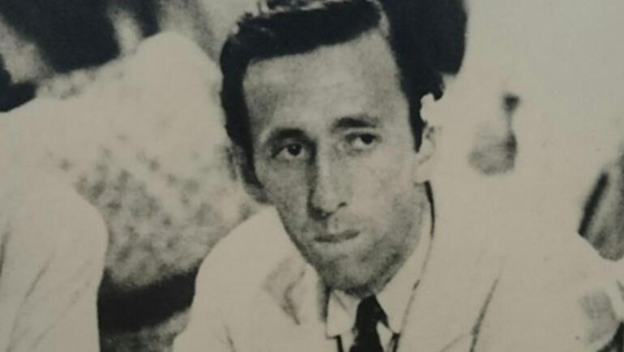

Orhan Veli kimdir
Hayatından şiirler yazmak yerine, şiiri yaşamayı tercih eden güzel adam, Orhan Veli’nin hayat hikayesidir.
36 yıllık kısacık hayatına ne çok şiir sığdırdı. Naif mizacı ve iyilik dolu kalbi, tüm beynini ele geçiren şiirlerin cümlesi oluvermişti. Sokaktaki adamın sesi, söyleyemediği cümleleriydi şiirleri. Tüm aşklarını doldurduğu heybesinde şiirlerle geçen bir ömür, onu çukura çekse de, o, son vedasını yine bir şiirle yapacaktı…
"Aşkın Resmi Geçidi
…
Gelelim sonuncuya.
Hiçbirine bağlanmadım
Ona bağlandığım kadar.
Sade kadın değil, insan.
Ne kibarlık budalası,
Ne malda mülkte gözü var.
Hür olsak der,
Eşit olsak der.
İnsanları sevmesini bilir
Yaşamayı sevdiği kadar".

Çocukluğu
Orhan, 13 Nisan 1914’te, Beykoz’a bağlı Yalıköyü’ndeki İshak Ağa Yokuşu'ndaki Çayır Sokak 9 numaralı konakta, İzmirli tüccar Fehmi Bey’in oğlu Mehmet Veli ve Beykozlu Hacı Ahmet Bey’in kızı Fatma Nigar Hanım’ın oğlu olarak dünyaya geldiğinde ailesi ona, “Ahmet Orhan” adını verdi. Kanundan sonra ise, aile “Kanık” soyadını aldı. Ancak Soyadı Kanunu’ndan önce, babasının adındaki Veli’yi sahiplenecek ve zamanla Orhan Veli olarak tanınacaktı.
Orhan’ın 3 kardeşi oldu. O, Adnan Veli, Füruzan ve Ayşe Zerrin’in abisiydi. Ancak Ankara’da bulundukları sırada dünyaya gelen Ayşe Zerrin, 1 yaşını dolduramadan kapatacaktı hayata gözlerini…
Orhan, naif bir çocuktu. Belki edebiyata düşkünlüğü de bu naiflikten kaynaklı olacaktı. Büyürken başına talihsiz kazalar, hastalıklar da geldi. Yanma tehlikesiyle burun buruna geldiğinde henüz 5 yaşında küçücük bir çocuktu örneğin; uzun süre tedavi gördü. 9 yaşında kızamık, 17 yaşında da kızıl hastalığına tutulacaktı…
Herkesle iyi geçinen, her güzelliğe kalbini açan bir Orhan Veli vardı. Çocuk yaşları için büyük olgunluk anlamına gelen bu özellik, ileride bir güzel edebiyat adamı olmasına vesile olacaktı.
Yıllar sonra bir gün kardeşi Adnan Veli, abisini kişisel yönden şöyle tanımlayacaktı: "Vücudu oldukça kemikli, kollarıyla bacakları epey uzundu. Göğsünü öne doğru eğerek hafifçe yaylanarak yürürdü. Elleri gayet ince, beyazdı. Parmakları adam akıllı uzun, tırnakları pembe, uzun ve yuvarlaktı. Geniş bir alnı, sivri bir çenesi vardı. Dudakları enikonu etliydi. Burnu tümsekliydi. Yüzü gençlikte çıkardığı ergenlik sivilceleri sebebiyle pürtüklüydü”.
Mehmet Veli Bey, Fatma Nigar Hanım ile evlendiği sırada, Mızıka-yı Hümayun’da klarnist idi. Cumhuriyet’in ilanından sonra ise, Cumhurbaşkanlığı Senfoni Orkestrası’nın şefi oldu. Aynı zamanda Musiki Muallim Mektebi’nde (Ankara Konservatuarı) Armoni Profesörü idi. Mehmet Veli Bey’in görevleri dolayısıyla, Orhan, 1923 – 1948 yılları arasında Ankara’da yaşadı. Gençliğe ilk adımını burada atacak, ilk aşkın sancısını, ilk gözyaşının tazeliğini burada tadacaktı. Bu süreçte bir dönem de Ankara Radyosu’nda müdür olarak görev alan Mehmet Veli Bey, daha sonraki yıllarda İstanbul Konservatuarı’nda İlmi Kurul Üyesi ve İstanbul Radyosu’nda Ses Uzmanı olarak bulunacaktı.

Eğitim hayatı
Çocuk yaşları Beykoz, Beşiktaş ve Cihangir’de geçti Orhan’ın. Mütareke sırasında Akaretler’deki Anafartalar İlkokulu’nun ana sınıfına başladı. Birinci sınıfa başlaması gerektiğinde ise, bu okuldan alındı ve Galatasaray Lisesi’ne yatılı eğitime verildi.
Babası, Ankara’daki görevine başlayalı 2 yıl olmuştu. Orhan, annesiyle İstanbul’daydı; daha doğrusu yatılı okulda. Babası daha fazla ayrı kalmalarını istemedi ve Orhan’ın Galatasaray Lisesi’ndeki kaydı, dördüncü sınıfı tamamlamışken, alındı ve Orhan, annesiyle Ankara’ya taşınarak Gazi İlkokulu’na kaydoldu. Bir yıl sonra 1926’da da Ankara Erkek Lisesi’ne (Ankara Atatürk Lisesi) yatılı kaydoldu.
Orhan, 1932’de liseden mezun oldu ve İstanbul Üniversitesi Edebiyat Fakültesi, Felsefe Bölümü’ne kaydoldu. 1933’te Edebiyat Fakültesi Talebe Cemiyeti’ne başkan seçildi. 1935’e kadar devam ettiği okulu ise mezun olmadan bıraktı. Bir yandan da, Galatasaray Lisesi’nde öğretmen yardımcısı olarak çalışıyordu. Bu göreve 1 yıl daha devam etti.

Edebiyata merakı
Orhan, edebiyatın büyüsünü keşfettiğinde henüz ilkokul sıralarındaydı. Küçük öyküler yazıyordu çocuk parmaklarıyla. Bir öyküsü, “Çocuk Dünyası” adlı dergide yayımlandığında da ilkokuldaydı.
Yedinci sınıftayken Oktay Rıfat Horozcu ile tanıştılar. Birkaç yıl sonra da Halkevi’nde düzenlenen bir müsamere sırasında Melih Cevdet Anday ile tanıştılar. Zamanla güzel bir üçlü oluşturacaklardı. Liseye başladığında ise, Edebiyat Öğretmeni, Ahmet Hamdi Tanpınar’dı. Tanpınar, Orhan’ın öğüt babası olmuştu. Onun yön bulmasında, özel bir isimdi.
Lise döneminde enfes dostları Melih Cevdet ve Oktay Rıfat ile bir dergi işine soyundular, “Sesimiz” adını verdikleri dergiyi çıkardılar. Orhan Veli, yaşamının bu genç çağlarında aruz vezni ile tanışmıştı. Kuralları kavramış, şiirlerini tam bir uyum içinde yazıyordu. Ellerinin, kalbinin ve de ruhunun şiire yatkınlığının keşfiydi bu süreç…
Edebiyatın yanında sanatın her kolu ilgisini çeker olmuştu aslında. Tiyatro çalışmalarına da katılmaya başladı. İlk rolünü, Raşit Rıza’nın oynadığı “Aktör Kin” oyununda aldı. Ahmet Vefik Paşa’nın Moliere’den uyarladığı, Ercüment Behzat Lav’ın sahnelediği, “Zor Nikah”ta, “Üstat-ı Sanî"yi; Maurice Maeterlinck’in Monna Vanna’sında “baba” rolünü üstlendikten sonra, Orhan Veli, tiyatroda alanındaki çalışmalarına çevirmen olarak devam etti. Pek çok oyun çevirecekti.

Varlık dergisi dönemi
Orhan Veli, üniversiteyi yarıda bıraktıktan sonra Ankara’ya döndü. PTT Umum Müdürlüğü, Telgraf İşleri Reisliği, Milletlerarası Nizamlar bürosunda çalıştı.
Ankara’ya döner dönmez eski arkadaşlarıyla daha sıkı görüşmeye başladı. Giderek şiirleri birbirine benzemeye başlayana dek yazdılar da yazdılar. 1936’da, Nahid Sırrı Örik’in, Orhan Veli hakkında bulunduğu öneri üzerine, “Oaristys, Ebabil, Eldorado, Düşüncelerimin Başucunda” adını verdiği şiirleri, “Varlık” dergisinde yayımlandı.
Varlık, Orhan Veli ve arkadaşlarından şu cümlelerle bahsediyordu: “Varlık'ın şiir kadrosu yeni ve kuvvetli genç imzalarla zenginleşmektedir. Aşağıda dört şiirini okuyacağınız Orhan Veli, şimdiye kadar yazılarını neşretmemiş olmasına rağmen olgun bir sanat sahibidir. Gelecek sayılarımızda onun ve arkadaşları Oktay Rifat, Melih Cevdet ve Mehmet Ali Sel'in şiirimize getirdikleri yeni havayı daha iyi belirtecektir”.
Orhan Veli, bazı şiirlerini yayımlarken “Mehmet Ali Sel” takma adını kullandı. Oktay Rıfat bu takma ad ile ilgili olarak şu açıklamayı yapmıştı: “Galiba yırtmaya kıyamadığı şiirlerini bu adla çıkarırdı". Kendisi ise, Baki Süha Ediboğlu’nun kendisine konu hakkında yönelttiği soruyu şöyle cevaplamıştı: “O zamanlar çok şiir yayınlıyordum. Adımın her zaman görünmesi hem benim için hem de dergi için doğru değildi. Bir de şu var: Mehmet Ali Sel benim bazı tecrübelerime alet olmuş bir isimdir”.
Orhan Veli şiirleri, 1936 – 1942 yılları arasında Varlık’ta yayımlanmaya devam etti. Bunun yanında “İnsan, Ses, Gençlik, Küllük, İnkılâpçı Gençlik” dergilerinde de yayımlanıyordu.
Orhan Veli’nin şiirleri, şekil, yapı ve içerik itibarıyla hece ölçüsü olarak kabul ediliyordu. 1937’den sonra ise, Orhan Veli ve arkadaşları, benimseyecekleri yeni tarzla yazacaklardı…

(Melih Cevdet - Orhan Veli - Oktay Rıfat)
Garip akımının ilk adımları
Mayıs 1941’de, Orhan Veli’nin 24, Melih Cevdet’in 16, Oktay Rıfat’ın ise 21 şiirinin yer aldığı “Garip” seçkisi yayımlandı. Kitabın önsözü, en az şiirler kadar ses getirmişti ve o da Orhan Veli’ye aitti.
Bu kitap, “Birinci Yeni” olarak da anılacak “Garip” akımını başlatmış oldu. Bu üç kafadar, başlattıkları akımla, radikal bir tutum içine girmişlerdi. İlk iş hececilerin, özellikle Ahmet Haşim’in şiirlerini ve Nazım Hikmet’in toplumcu – gerçekçi şiirlerini reddettiler.
Orhan Veli, yeni bir zevk ortaya çıkarmanın peşinde, eski olan her şeyden uzak durmaya çalışıyordu. Hece ve aruz ölçülerini kullanmayı reddediyorlar; kafiyeyi ilkel; mecaz, teşbih, mübalağa gibi edebi sanatları da gereksiz buluyordu. Yalın bir anlatımı benimsemiş, şiirinin dilini, konuşma diline yakınlaştırma çabası içine girmişti. Orhan Veli, sokaktaki adamın söylemini şiirlerine taşıyarak, yeni bir tür gündeme getirmişti. Garip akımı, 1940-1950 yılları arasında Cumhuriyet Dönemi şiirinde önemli etkiler bırakacaktı. Garip şiiri, yapıcı ve yıkıcı her özelliğinin toplamında, Türk şiirinde özel bir yer edindi.
Orhan Veli, Garip akımını, sadece yazdıklarıyla değil, hayata karşı duruşuyla açıklıyordu. Fiziksel ve kişisel yönlerini de bu uğurda kullanmaktan çekinmiyordu. O şiirlerinde hayatından kesitler sunmuyordu aslında; hayatını şiirlerine göre yaşıyordu.
Bu süreçte şiirler ve önsöz, edebiyat dünyasında büyük tartışma yarattı. Özellikle Orhan Veli’nin kaleminden dökülmüş bir “Yazık Oldu Süleyman Efendi”ye vardı ki, hakkında ne çok yorum yapılıyordu. Kimileri tenkit ederken, kimileri çalıntı olduğunu iddia ediyordu. Bir başka taraf ise, Türkçenin eşsiz dizeleri olduğunu düşünüyordu. Bir şeyin hakkında bu kadar çok konuşulması, o şeyi ister istemez yüceltiyordu. Hakkında bunca şey konuşulan bu şiir, bir anda popüler oldu. Nurullah Ataç’ın deyimiyle “vapurlara, tramvaylara, kahvehanelere” kadar girdi…
O halde şiirden bir kuplecik bırakayım şuraya…
"Ben Orhan Veli
"Yazık oldu Süleyman Efendiye"
Mısra-i meşhurunun mübdii..
Duydum ki merak ediyormuşsunuz,
Hususi hayatımı,
Anlatayım:
Evvela adamım, yani
Sirk hayvanı falan değilim.
Burnum var, kulağım var,
Pek biçimli olmamakla beraber.
Bir evde otururum,
Bir işte çalışırım.
Ne başımda bulut gezdiririm,
Ne sırtımda mühr-ü nübüvvet".
…

Rakı şişesinde balık olsam
“Yazık Oldu Süleyman Efendi”nin ününü, Ahmet Haşim’in, “Göllerde bu dem bir kamış olsam” dizesini hicvetmek için yazdığı “Rakı Şisesinde Balık Olsam” izledi.
Orhan Veli, “Eskiler Alıyorum” şiirinin sonuna bir dize olarak eklemişte bu cümleyi…
"Eskiler alıyorum
Alıp yıldız yapıyorum
Musiki ruhun gıdasıdır
Musikiye bayılıyorum
Şiir yazıyorum
Şiir yazıp eskiler alıyorum
Eskiler verip Musikiler alıyorum.
Bir de rakı şişesinde balık olsam".

Memur Orhan Veli
Orhan Veli, 1942’de PTT’deki görevinden ayrıldı ve askere gitti. Görevi, “Gelibolu”, Kavak Köyü’nde, 1945’e kadar sürdü. Şiirlerine devam ediyordu, ancak bu süreçte sadece 6 şiiri yayımlandı. 1945’te teğmen olarak terhis olduğunda, Milli Eğitim Bakanlığı’nın Tercüme Bürosu’nda işe başladı.
Çeviri işinde de oldukça iyiydi. Fransızcadan yaptığı çeviriler, bakanlığın klasikler serisinden yayımlandı. Şiir için verdiği ara Orhan Veli gibi kanında şiir akan bir adam için çok fazlaydı. Şubat 1945’te “Vazgeçemediğim” adını verdiği şiir kitabını yayımladı. Nisan 1945’te ise, “Garip”in ikinci baskısı yayımlandı. Bu kez sadece kendi şiirleri vardı.
Ardından 1946’da “Destan Gibi”, 1947’de de “Yenisi” adını verdiği kitaplarını çıkardı.
Tercüme Bürosu’ndaki işini de keyifle yapıyordu Orhan Veli. Ancak 1946 seçimlerinden sonra Hasan Ali Yücel’in Milli Eğitim Bakanlığı görevinden ayrılması, bu birimin önemini yitirmesine sebep oldu. Orhan Veli de çok geçmeden istifa etti. Bu istifa, bir kesim tarafından, Orhan Veli’nin memurluğa uyum sağlayamaması olarak yorumlandı. İstifasının ardından Mehmet Ali Aybar’ın “Hür ve Zincirli Hürriyet” adlı gazetelerinde deneme ve eleştiri yazıları yazdı. 1948’de ise, “La Fontaine” masallarını Türkçeye çevirdi.

Yaprak dergisi
Bakanlıktaki değişim sadece Orhan Veli’yi değil, arkadaşları Melih Cevdet, Oktay Rıfat, Bedri Rahmi Eyüboğlu, Abidin Dino, Necati Cumalı ile birkaç buluşmanın ardından, 1948 sonunda bir dergi çıkarmaya karar verdiler. Adının “Yaprak” olmasına karar verdikleri derginin masraflarını Mahmut Dikerdem karşılamıştı. Dergi, 15 günde bir yayımlanıyordu.
İlk sayısı, 1 Ocak 1949’da çıktı. Cahit Sıtkı Tarancı, Fazıl Hüsnü Dağlarca, Sait Faik Abasıyanık, Cahit Külebi gibi özel isimlerin eserlerini yayımlayarak, 1 Haziran 1950’ye kadar 28 sayı çıkardı.
Dikerdem, derginin açılmasındaki maddi desteği sağlamıştı; sahibi de Yazı İşleri Müdürü de Orhan Veli’ydi. Haliyle tüm sorumluluk kendisindeydi. Haliyle her problem, Orhan Veli’yi ilgilendiriyordu. Gün geldi, dergiyi ayakta tutabilmek için paltosunu dahi satmak zorunda kaldı. Onuncu sayıyı yayımlamak için de Abidin Dino’nun kendisine hediye ettiği resimleri elden çıkardı.
Bu dergi, Orhan Veli’nin kaleminin yanında fikir adamlığı yönünün de güçlü olduğunu ortaya çıkarmıştı. İş bitirici yönü, en az şiirleri kadar etkiliydi.

(Orhan Veli ve Nahit Hanım)
Aşkları
Orhan Veli, bir şairdi ve elbet aşklarından besleniyordu. Kısacık ömrünün son üç yılını Nahit Hanım’a duyduğu aşkla geçirdi. Ona kalpten mektuplar yazdı. Bu mektuplar, ölümünün üzerinden 64 yıl geçtikten sonra gün yüzüne çıkacak ve “Yalnız Seni Arıyorum / Nahit Hanım’a Mektuplar” adıyla basılacaktı.
Bu, bir gizli aşktı. Orhan Veli, derdini kimselere anlatamadıkça, kağıtlara döküyordu. Nahit Hanım, bu büyük aşkın yaşandığı zamanlarda, Yahya Kemal’in öğrencisi, Halil Veda Fıratlı ile evliydi. Daha sonra da Şair Arif Damar ile evlenecekti…
Orhan Veli, Nahit Hanım’a sırılsıklam aşık olmuştu. Aşkın uykusuz gözleri, ona durmadan şiirler, mektuplar yazdırıyordu. Ama bu aşk, Nahit Hanım’a bir türlü yetmedi. Orhan Veli de her satırında biraz daha aşkını ispat etme hırsına bürünerek yazdı cümlelerini…

(Bella Eskenazi)
Sonra Bella vardı; Bella Eskenazi. Orhan Veli ve Bella, Bella henüz öğrenciyken tanıştı. Nahit Hanım vardı, ancak Bella ile de Orhan Veli’ye nice aşk şiirleri yazdıran bir arkadaşlık doğacaktı aralarında.
Ablası ve eniştesi, Ankara’ya taşındığında, Ankara’ya 35 km uzaklıktaki Hasanoğlan Köyü’nde Köy Enstitüleri’ni gördü Bella. Bu aşkın ilk tohumu, işte bu zamana aitti.
Bella, burada öğretmen olmak istiyordu. Ancak, adı, cinsiyeti ve gençliği bir çekince yarattı. Bella’nın buradaki görevini İsmet İnönü, “Ha Bella, ha Ayşe ne fark eder!” nidasıyla onayladı. Bella, İngilizce dersleri vermeye başlamıştı. İşte bu görevi sırasında tanıştılar Orhan Veli’yle.
Şu cümlelerle anlatıyordu Cumhuriyet’e verdiği bir röportajında Bella o günleri, “Orhan Veli’yle o yemeklerde arkadaş olduk. Çok şıktı. Kıyafeti azdı ama çok hoş giyinirdi. Alkolik düzeyinde rakı içerdi ama tek taşkınlığını görmedim. Hatta hayatımda gördüğüm en terbiyeli insandı. O kadar çok içki içenini gördüm onun gibi ölçülü birine rastlamadım. Bir araya geldiğimiz bu toplantılarda hep birlikte yemekler yenir, sohbet edilir, çok güzel tartışmalar yaşanırdı. Entelektüel sohbetlerdi bunlar. Bir süre sonra ben başka bir odaya geçerdim. Çünkü sınavlarım vardı, aklım derslerimdeydi. Sessizce bir kenarda ders çalışırdım. Orhan Veli de yanımda dururdu. Daha doğrusu ben nereye gitsem, o da yanıma gelirdi. Ben sessiz biriydim ama o benden de sessizdi. Ben ders çalışırken yanımda sessizce durur ya şiir yazar ya da resim yapardı. Çok güzel resim yapardı. Mesela evimizde ‘Metamorfoz’ isimli bir tablo vardı, onun aynısını yapmıştı. Bu arada diğer herkes öbür odada sohbet ederdi”.

Sonra şiirlerini açık ve seçik Bella’ya yazmaya başladı Orhan Veli. Bu ilk kez olduğunda çok etkilenmişti Bella. Orhan Veli, genç kızdan defterini istedi ve başladı yazmaya. Sonra hep ona hitap ettiği gibi ederek, “Al bakalım düşes” dedi. Bella, sessiz, sakin “Sereserpe” şiirinin büyüsüne çoktan kapılmıştı. Bu şiir, daha birçoklarının ilkiydi…
Yine o meşhur “Anlatamıyorum” şiirini de, Bella ile sessiz geçen bir oturmaları sırasında, kendisine “Neyin var?” diye soran Bella’ya cevaben yazmış; “Sana hediyem olsun” demişti.
Orhan Veli, her şeyden önce şiire aşıktı belki de…

(Orhan Veli kardeşleriyle)
Orhan Veli öldü
Orhan Veli, “Yaprak” kapandıktan sonra İstanbul’a döndü. Birkaç ay sonra 10 Kasım’da bir haftalığına Ankara’ya gitti. Burada onu talihsiz bir kaza bekliyordu. Orhan Veli, belediyenin kazdığı bir çukura düştü ve başından yaralandı. Her şey yolunda gibiydi. İki gün sonra İstanbul’a döndü.
14 Kasım’da arkadaşı Erol Güney’e konuk olduğu öğle yemeği sırasında fenalaştı. Rahatsızlık, beyninde damar çatlamasıyla başlamıştı. Sebebi teşhis edilemedi ve Orhan Veli’ye alkol zehirlenmesi tedavisi uygulandı. Beyin kanaması geçirdiği anlaşıldığındaysa, artık çok geçti. Akşam saat 20.00’de komaya giren Orhan Veli, 23.20’de, Cerrahpaşa Hastanesi’nde, hayata veda etti. Henüz 36 yaşındaydı.
16 Kasım’da otopsisi yapılmadan önce Sanat Dostları Cemiyeti, Orhan Veli’nin yüzünün mulajını aldı. Cenazesi, 17 Kasım 1950’de, Beyazıt Camii’nden kaldırıldı. Cenazesi, özellikle sanatçılar, bilhassa yazarlar ve akademisyenlerden oluşan bir kalabalığın omzunda, Sirkeci’ye kadar taşındı. Oradan da bir otomobil ile Aşiyan Mezarlığı’na götürülerek defnedildi.

Son Yaprak
Ölümünün ardından üzerindeki eşyalar kontrolden geçti. Fenalaştığı sırada üzerinde bulunan ceketinin cebinde bir diş fırçasının sarılı olduğu kağıda, “Aşk Resmi Geçidi” şiirini yazmıştı. Ömrünün son geçidini hissetmişçesine…
Arkadaşları, Orhan Veli’nin ardından güzel bir veda etmek istediler. Sonuçta Orhan Veli de üzerine düşeni yapmış, ölüme giderken bile onları şiirsiz bırakmamıştı. 1 Şubat 1951’de, tek sayı olarak, “Son Yaprak” çıkarıldı. İşte bu tek sayıda, Orhan Veli’nin son şiiri, “Aşkın Resmi Geçidi” de vardı….
